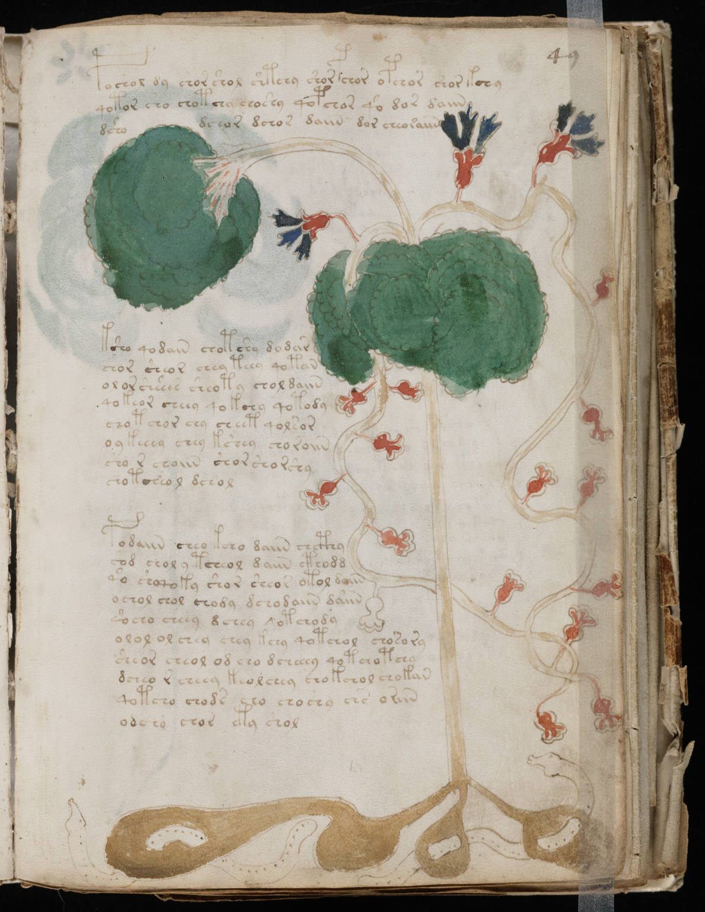

f49r
1poshol dy shor shol shtchy shorpchor opchor shorkchy2qotor sho chotchy choshy qopchor qo dor daiin3dshodchor dchor daiin dor cheo raiin4ksho qodain chotshy dodar5chor sheor chey teey qotan6olor shshes sheoty chol daiin7qokeor cheey qokchy qotody8chot chor chy cheet qolsor9o y keeey chey kshey choroiin10sho r choiin shor shor shy11chotcheol dchol12podaiin cheo kcho daiin chcthy13sod chol y tcheol daiin cthodd14qo shoqoky shor sheor otol daiin15ochol chol chody dchodaiin daiin16qocho cheey dchey qotchody17olol olchey chey kchy qotchol chosory18sheor cheol od cho dcheeey qotchotchy19dcheo r cheey keolchey chokchol chokan20qotcho chodr cho choshy chs oriin21odchy chor ety shol
